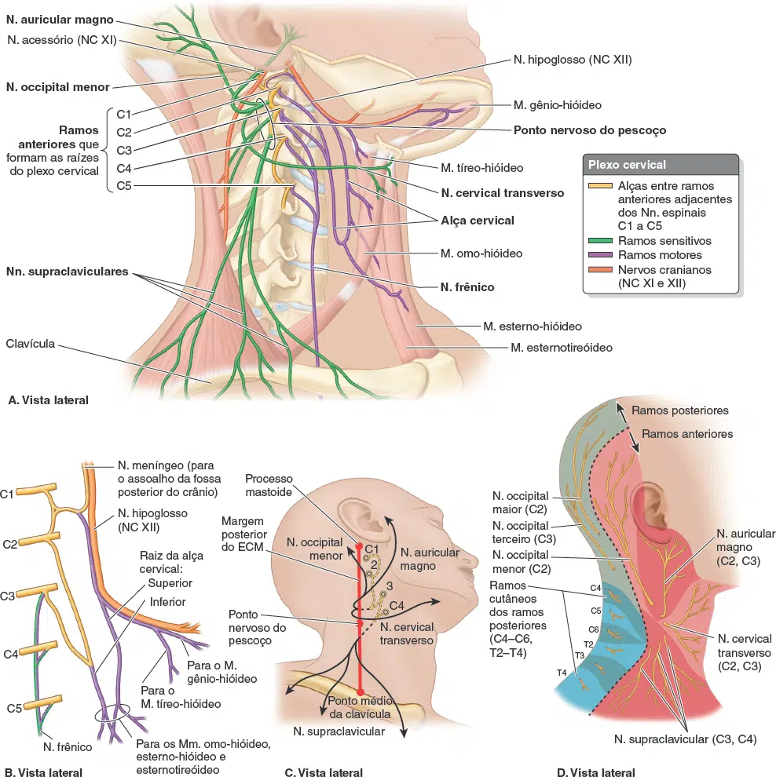
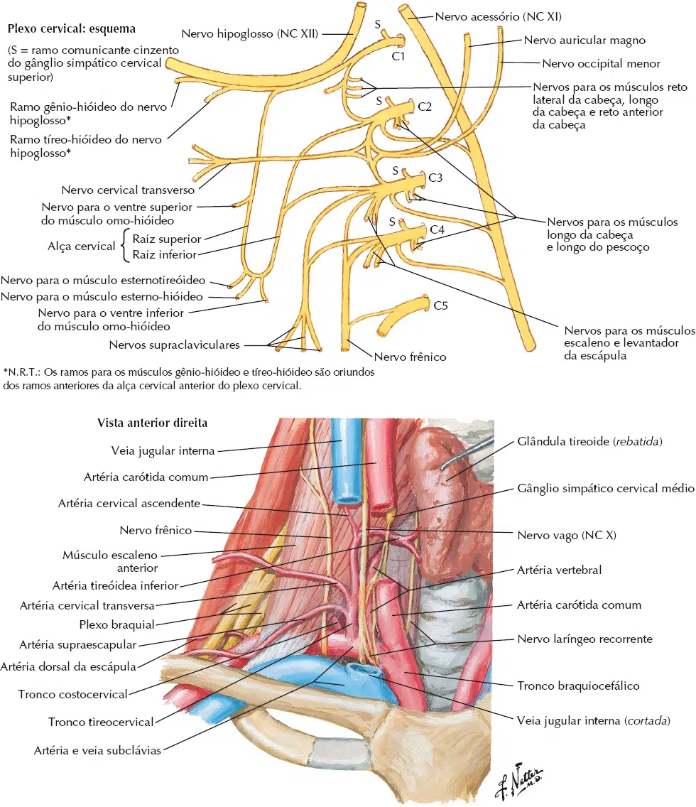

O plexo cervical é uma estrutura profunda do pescoço, situado profundamente ao m. esternocleidomastóideo.
Alguns nervos do plexo cervical contornam o m. esternocleidomastóideo alcançando a superfície, enquanto que, outros nervos permanecem profundos.
Desta forma o plexo cervical é dividido em uma parte superficial e outra profunda.
A maior parte dos nervos do plexo cervical possui território de inervação cutânea, para o pescoço e regiões da cabeça.
Os nervos do plexo cervical e sua formação são:
Nervo occipital menor: formado pelo ramo anterior de C2, contorna a margem posterior do m. esternocleidomastóideo, dirigindo-se superiormente para a região occipital.
Supre a pele do couro cabeludo e orelha externa.
Nervo auricular magno: formado pelos ramos anteriores de C2 e C3, contorna a margem posterior do m. esternocleidomastóideo (inferior ao nervo occipital menor), dirigindo-se para a orelha externa.
Supre a pele da região inferior da orelha externa.
Nervo cervical transverso: formado pelos ramos anteriores de C2 e C3, contorna a margem posterior do m. esternocleidomastóideo (inferior ao nervo auricular magno), dirige-se anteriormente e transversalmente no pescoço, recoberto pelo m. platisma.
Supre a pele da face anterior do pescoço.
Nervos supraclaviculares: formado pelos ramos anteriores de C3 e C4, emerge na margem posterior do m. esternocleidomastóideo, com direção obliqua e inferior.
Divide-se nervos supraclaviculares medias, intermédios e laterais.
Suprem a pele da região do ombro.
Alça cervical: formado pelos ramos anteriores de C1, C2 e C3, a alça cervical é uma estrutura profunda do plexo cervical.
A alça cervical é formada por duas raízes (superior e inferior), que abraçam a veia jugular interna.
A alça cervical supre os músculos infra-hióideos.
Nervo frênico (do grego phrenikos – relativo ao diafragma): formado pelos ramos anteriores de C3 e C4 (algumas vezes com contribuinte de C5).
O nervo frênico é uma estrutura profunda do plexo cervical.
Tem trajeto descendente no pescoço, anteriormente ao m. escaleno anterior.
Cruza anteriormente a artéria subclávia, alcançando a cavidade torácica.
Atravessa a cavidade torácica entre a pleura e pericárdio, anteriormente ao hilo do pulmão, até alcançar o m. diafragma.
O nervo frênico supre o m. diafragma.

